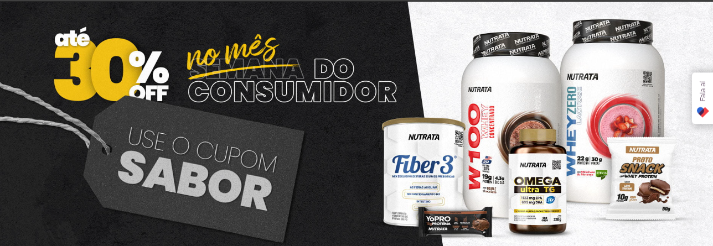
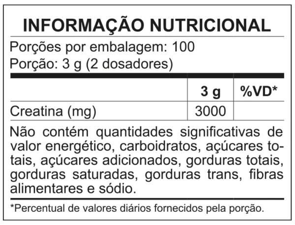

ou R$ 139,99 no cartão de crédito em até 2x de R$69,99 sem juros
no boleto ou pix
 Creatina Creapure é um suplemento de creatina monohidratada e micronizada. A Creapure é uma marca produzida na Alemanha por um processo patenteado de alta qualidade, garantindo 100% de pureza em um produto mais estável e livre de metabólitos tóxicos ao organismo.Por isso, esse é um suplemento premium destinado a complementar os estoques endógenos de creatina. Uma porção de creatina Creapure® contém 3 g de creatina.assam por rigorosos testes nos EUA antes de serem distribuídos, prática que faz com que os consumidores confiem e atestem a qualidade dos suplementos que estão consumindo. *Sabor cookies e chocomaltine contem glúten.